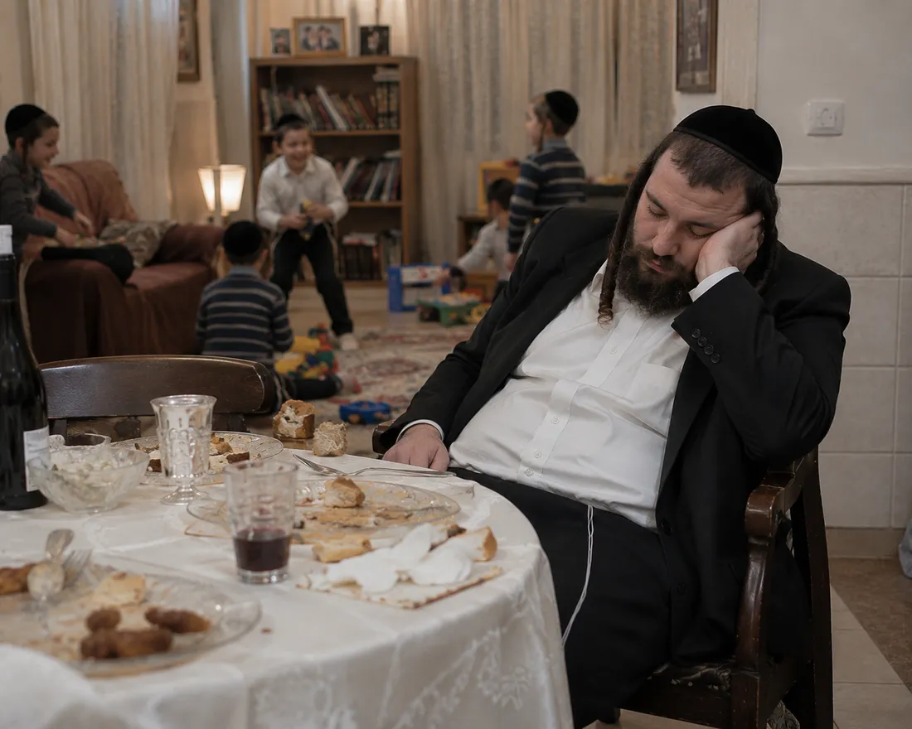

קורס דיגיטלי חדש מבית ונשמרתם — לגברים שיושבים רוב היום, ומרגישים את זה
נעשה ונשמע הוא קורס מצולם קצר של שי פרלא: עיקרון אחד בצלחת, פעמיים בשבוע תנועה בבית, ושגרה ששורדת שבוע אמיתי — עם שבת, שמחות וסדרים מלאים. בלי משקל, בלי ספירות, בלי לשנות את החיים. קודם עושים צעד קטן. אחר כך מבינים כמה הוא משנה.

אז דבר ראשון — זה לא אשמתך.
כל מה שהציעו לך עד היום היה בנוי כמו מהפכה: תוכנית קשה, רשימות, שעות שאין לך.
מהפכות מתחילות בכוח גדול — וקורסות בשבת הראשונה.
לא כי אתה חלש. כי הן בנויות על סבל.
"הלוואי שהיה לי כוח גם בערב."
המשפט הזה לא צריך להישאר משאלה.
ממתין לעדויות אמת. לפני עלייה לאוויר נכנסים לכאן 3-4 צילומי מסך ווטסאפ אמיתיים מלקוחות,
כלשונם ובאישור הכותבים — עדויות תפקוד בלבד: גב שמחזיק, אנרגיה בערב, מדרגות בלי עצירה, חליפה שנסגרת.
בלי תמונות גוף, בלי מספרים. שמות פרטיים או טשטוש. (צילומי מסך אנכיים, עד 480px רוחב כל אחד.)
עד שזה קורה — הדף לא עולה לאוויר.
[כאן תיכנס עדות ווטסאפ אמיתית — תפקוד, לא מספר. דוגמה לסגנון: גב שמחזיק סדר שלם, מדרגות בלי עצירה, כוח בערב לילדים.]
[עדות שנייה — רגע יומיומי שחזר: שבת בלי כבדות, ישיבה ארוכה בלי לזוז כל חמש דקות.]
העדויות בדף הזה יוצגו רק כלשונן, מהודעות אמיתיות, באישור הכותבים.
לא כדי לנפח את ההצעה. כי בלי אלה, השבוע האמיתי שלך ינצח את השיטה.
איך עוברים סעודות שבת מלאות — דגים, צ׳ולנט, קוגל — בלי להרגיש שאתה "מתחיל מחדש" כל יום ראשון. שבת נשארת שבת.
שווי: ₪47 — כלול
סדרת תרגול קצרה לשעות הישיבה — ליד הסטנדר, במשרד, בבית. הגב מקבל את מה שהוא צריך כדי להחזיק את היום.
שווי: ₪39 — כלול
דף סדר פשוט: מה עושים בכל יום, צעד אחד ביום. בלי להתלבט ובלי לתכנן — רק לפתוח ולעשות.
שווי: ₪29 — כלול
מצב ההרשמה למחיר ההשקה
כבר 63 נרשמו במחיר ההשקה. (ערכי טסט)
כשנגיע ל-150, המחיר עולה ל-₪197.
תשלום אחד. גישה מלאה לקורס ולכל הבונוסים.
אני רוצה להתחיל — ₪97תשלום מאובטח דרך קארדקום · הגישה נשלחת מיד למייל

תיכנס לקורס. תעשה את הצעד הראשון.
אם אחרי 30 יום לא הרגשת הבדל בתפקוד — מייל אחד ל-shaiperla@gufbari.com
ואתה מקבל את כל הכסף בחזרה. בלי טפסים ובלי שאלות.
אני יכול להציע את זה כי אני חי את השיטה בעצמי, כל יום.
הבדיקה שדחית כבר שנה עדיין מחכה לך. הצעד הראשון לוקח פחות מעשר דקות.
נעשה. ואז נשמע — ₪97